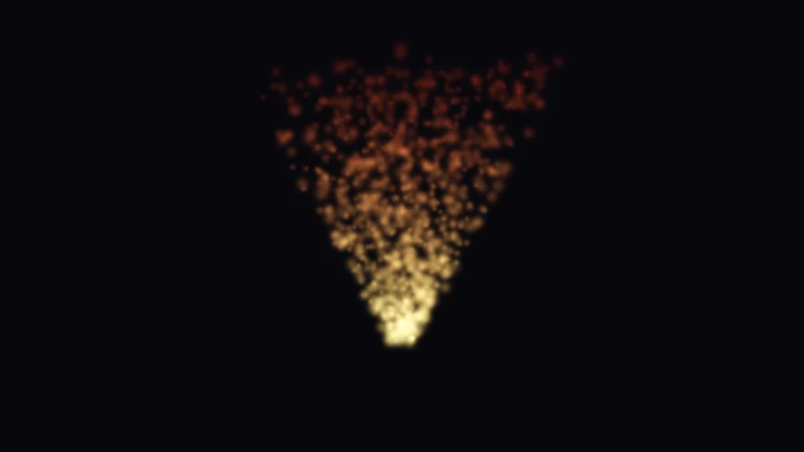

Advanced Metal
Life Without Geometry Shaders#
examples/Sources/17-ComputeParticles, run with swift run ComputeParticles. Download all examples or see how to run them.Other APIs have a geometry shader stage between the vertex and fragment stages. It receives a whole primitive and can emit new ones: turn a point into a quad, a triangle into three lines, one triangle into six for the faces of a cubemap.
Metal has no geometry shaders, by design. They fit poorly on GPU hardware, especially on tile-based architectures, and they are slow nearly everywhere. Each of their classic uses has a better replacement in Metal. This chapter walks through them.
Points into quads: instancing#
The standard geometry shader demo expands points into camera-facing quads, or billboards, for particles. In Metal, draw a four-vertex quad with one instance per particle, and build the corners in the vertex function:
struct Particle {
packed_float3 position;
float size;
float4 color;
};
struct ParticleOut {
float4 position [[position]];
float2 uv;
float4 color;
};
vertex ParticleOut vertex_particle(uint vertexID [[vertex_id]],
uint instanceID [[instance_id]],
const device Particle *particles [[buffer(0)]],
constant Uniforms &uniforms [[buffer(1)]]) {
const float2 corners[4] = { {-1, -1}, {1, -1}, {-1, 1}, {1, 1} };
Particle p = particles[instanceID];
float2 corner = corners[vertexID];
// Expand in view space so the quad always faces the camera.
float4 viewPosition = uniforms.view * float4(float3(p.position), 1.0);
viewPosition.xy += corner * p.size * 0.5;
ParticleOut out;
out.position = uniforms.projection * viewPosition;
out.uv = corner * 0.5 + 0.5;
out.color = p.color;
return out;
}
encoder.setVertexBuffer(particleBuffer, offset: 0, index: 0)
encoder.drawPrimitives(type: .triangleStrip,
vertexStart: 0,
vertexCount: 4,
instanceCount: particleCount)
encoder->setVertexBuffer(particleBuffer, 0, 0);
encoder->drawPrimitives(MTL::PrimitiveTypeTriangleStrip,
NS::UInteger(0), // vertex start
NS::UInteger(4), // vertex count
NS::UInteger(particleCount)); // instance count
No vertex buffer for the quad, no vertex descriptor, and one draw call for any number of particles.
For particles that are always small, Metal can also draw .point primitives directly. Write the size to a [[point_size]] output and use [[point_coord]] in the fragment function as the texture coordinate.

Visualizing normals: lines from vertex IDs#
Another favorite: draw a short line along every vertex normal to debug a mesh. Draw .line primitives with twice as many vertices as the mesh has, and derive both the source vertex and which end of the line you are from the vertex ID:
vertex LineOut vertex_normals(uint vertexID [[vertex_id]],
const device MeshVertex *vertices [[buffer(0)]],
constant Uniforms &uniforms [[buffer(1)]]) {
MeshVertex v = vertices[vertexID / 2];
float3 position = float3(v.position);
if (vertexID % 2 == 1) {
position += float3(v.normal) * 0.1; // the tip of the line
}
LineOut out;
out.position = uniforms.projection * uniforms.view * uniforms.model * float4(position, 1.0);
return out;
}
encoder.drawPrimitives(type: .line, vertexStart: 0, vertexCount: mesh.vertexCount * 2)
encoder->drawPrimitives(MTL::PrimitiveTypeLine, NS::UInteger(0), NS::UInteger(vertexCount * 2));
This pattern, fetching from a buffer with a computed index, replaces most geometry shaders that emit a fixed amount of geometry per input. The same idea gives exploding meshes: use vertexID / 3 to find the triangle, compute its face normal from the three vertices, and push the vertex outward.
Rendering to many targets at once: layered rendering#
Geometry shaders are also used to send one draw call to all six faces of a cubemap or to several layers of a texture array. Metal covers this with two features.
Layered rendering: the vertex function selects the destination layer by writing [[render_target_array_index]]. Combined with instancing, one draw call renders the scene into every face:
struct LayeredOut {
float4 position [[position]];
uint layer [[render_target_array_index]];
};
vertex LayeredOut vertex_cube(VertexIn in [[stage_in]],
uint instanceID [[instance_id]],
constant CubeUniforms &uniforms [[buffer(1)]]) {
uint face = instanceID % 6;
LayeredOut out;
out.position = uniforms.faceViewProjection[face] * uniforms.model * float4(in.position, 1.0);
out.layer = face;
return out;
}
The render pass descriptor must set renderTargetArrayLength = 6, and the pipeline descriptor needs inputPrimitiveTopology = .triangle.
Vertex amplification: the GPU runs the vertex function once per vertex and replicates the output to several layers or viewports, with a per-view index available as [[amplification_id]]. It was introduced for stereo rendering, where each eye needs its own view matrix, and it is cheaper than instancing because shared work is done once. Set maxVertexAmplificationCount on the pipeline descriptor and call setVertexAmplificationCount on the encoder.
Generating geometry: compute and mesh shaders#
When the amount of output geometry is truly dynamic, there are two tools.
A compute function can write vertices into a buffer that a later render pass draws. This is the general-purpose answer for procedural meshes, marching cubes, and particle simulation. See Compute Shaders.
Mesh shaders, available on recent Apple GPUs and OS versions, replace the vertex stage with two programmable stages. An object function decides how many groups of geometry to emit, for example culling invisible clusters, and a mesh function outputs small batches of vertices and primitives directly to the rasterizer. They do everything geometry shaders did, efficiently, and are the foundation of modern GPU-driven rendering. Check support with device.supportsFamily(.metal3).
Subdividing: tessellation#
If the goal is to add detail to a surface, by subdividing triangles or displacing terrain, the right tool is the tessellator, covered in Tessellation.
Summary#
| Geometry shader use | Metal replacement |
|---|---|
| Points to quads | Instanced quad, or point primitives |
| Normals, wireframe, exploding | Vertex pulling with computed indices |
| Cubemap or array in one pass | render_target_array_index with instancing or vertex amplification |
| Procedural geometry | Compute functions, mesh shaders |
| Subdivision | Tessellation |